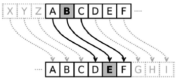
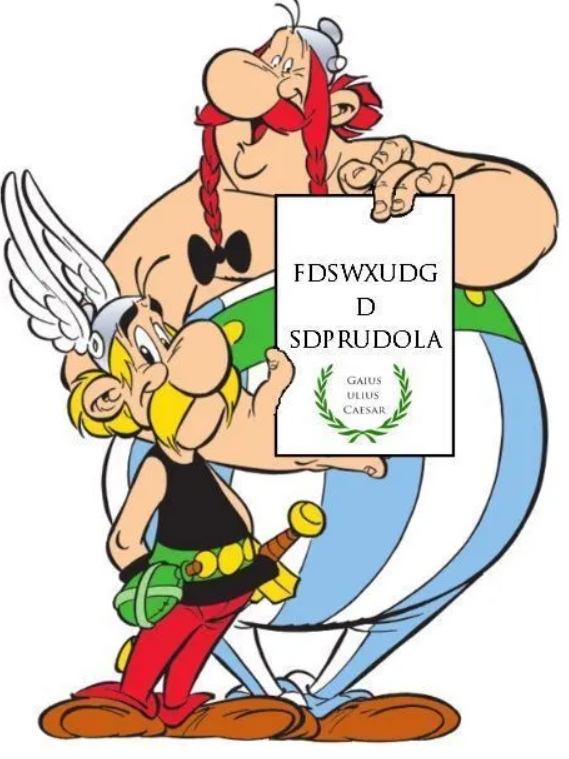
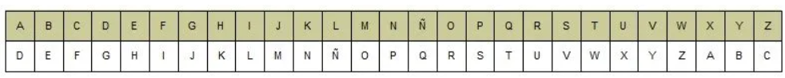

El código de César o cifrado César es uno de los sistemas más sencillos de codificación de mensajes. Su nombre se debe a la figura de Cayo Julio César, militar y político romano cuya dictadura puso fin a la República en Roma, que supuestamente lo utilizaba para comunicarse con sus generales.
Para cifrar los mensajes, cada letra del alfabeto es asociada con su posición en él. Así pues, durante el cifrado, cada letra en el texto original «x» es reemplazada por otra letra que se encuentra un número fijo «d» de posiciones más adelante en el alfabeto (x ⇒ x+d). Este número de desplazamientos es la clave o rotación (ROT). Por ejemplo, si desplazamos 3 posiciones utilizamos ROT3.
En el dibujo puede contemplarse cómo quedaría un desplazamiento de 3 (código de César original), correspondiente al polinomio «x+3». Así, la A sería sustituida por la D (situada 3 lugares a la derecha de la A), la B sería reemplazada por la E y así sucesivamente.
Con este algoritmo puedes escribir tu mensaje, elegir la clave y crear tu mensaje secreto de forma que solo aquellos que conozcan el código y la clave podrán descifrar tu mensaje.
Cuando se tiene un texto encriptado con un cifrado César y se conoce la clave de cifrado, desencriptarlo es bastante sencillo; sin embargo, cuando no se conoce dicha clave, se debe probar con los reordenamientos posibles hasta encontrar un mensaje con sentido. Para ello, se necesita explorar, como máximo el número total de claves, es decir, de desplazamientos posibles.
Si consideramos el alfabeto español, de 27 letras, habría 27 desplazamientos posibles y, por lo tanto, 27 alfabetos cifrados o claves. Para un alfabeto de n letras, se tendrían n desplazamientos posibles que suponen el mismo número de alfabetos cifrados o claves. Cuanto más largo sea el alfabeto más pruebas tendremos que hacer.
Ejemplo: Astérix y Obélix han interceptado el siguiente mensaje:

Como el mensaje lleva el sello de Julio César, y estos astutos galos ya le han «pillado el truco» al cifrado César, para desencriptarlo Astérix y Obélix sustituyen cada una de las letras del texto cifrado por las correspondientes del alfabeto original.

…F por C, D por A, S por P, W por T… obteniendo:
«CAPTURAD A PANORAMIX»
… lo tienen complicado los romanos.